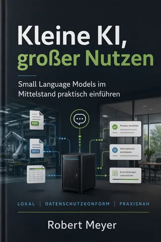

Bücher › Frage II: Was kann KI wirklich? › Skills > Workflows
Frage II · Systeme und Grenzen
Skills > Workflows
Wie Claude Code, MCP und die AI-Revolution Ihre Automation-Strategie obsolet machen
Wie Claude Code und MCP klassische Automations-Strecken ablösen. Mit dem Tag, an dem ein 47-Node-Workflow zum dritten Mal abstürzte.
Frage II · Systeme und Grenzen
Was kann KI wirklich?
Zwischen der Demo im Konferenzraum und dem Betrieb im Alltag liegen oft Monate. Hier geht es um das, was nach dem Pilotprojekt kommt: Kosten, Ausfälle, Grenzen. Und um die Frage, ob es immer das größte Modell sein muss.
Passt dazu

Kleine KI, großer NutzenSmall Language Models im Mittelstand praktisch einführen: lokal, sicher, bezahlbarDürfen wir das?KI in der öffentlichen Verwaltung sicher nutzen und verantwortlich einführenCode, nicht PowerPointsWie ich mit Claude Code, Skills und n8n mehr automatisiere als ganze Berater-Teams, und Sie das auch könnenEin Kurs mit einem Referenten vom Format des Herrn Robert Meyer darf man sich nicht entgehen lassen.
Für Behörden, Teams und Bildungsträger
Fortbildung und Beratung zum Thema
Ganztagesfortbildung zur KI-Kompetenz nach Art. 4 EU AI Act, Seminare und Beratung von der ersten Idee bis zum laufenden System.
Anfrage sendenAuf dem Laufenden bleiben
Neue Bücher, Vorlagen und Termine.
Praxis-Updates von Robert Meyer per E-Mail, ohne Hype.